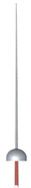
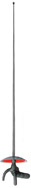

Fencing
Fencing is an elegant, prestigious, and Olympic sport which reflects the success qualities that are important to contemporary people who seek a challenge to both body and mind through an effective blend of patience and determination, discipline and competitiveness.
Epee, Foil and Sabre are the three weapons of fencing. The target areas are different for each weapon and the scoring of all three weapons is done electrically.
Epee
Target Area (Light Shade)
Weapon
 The epee is the modern version of the historical dueling sword. The Epee is heavier than the foil and has a rigid bi-angular blade. The valid target is the whole body, and hits are made with the point only and are registered by an electrical scoring apparatus. Epee hits are registered on the basis of which fencer makes the first hit. In this discipline double hits are valid when both touches are made within a very narrow time frame.Foil
Target Area (Light Shade)
Weapon
 The foil is the modern version of the original practice weapon for dueling sword. The valid target for foil is the body torso. Valid hits can only be scored with the point of the blade. Competitive fencing requires that fencers wear a metallic vest, which will permit the hits to be registered by an electric scoring apparatus.Sabre
Target Area (Light Shade)
Weapon
The sabre is the modern version of the cavalry sword. Hits can be scored with the point or the cutting edges on the target area, which is anywhere above the waist including head and arms, and are registered electrically. A hit on the off target area does not stop the continuance of the fencing phase.Olympic Fencing
Fencing is one of only four sports that have been on every modern Olympic program since 1896. The men's foil and saber events were on the 1896 program and the epee was added in 1900. But, because of major disagreements about the rules, France and Italy refused to compete in 1912. The Fédération Internationale d'Escrime, founded in 1913 to standardize rules, is the governing body for international fencing, including the Olympics.
The women's foil competition has been on the Olympic program since 1924. For many years, women fenced only with foils, but the epee was added to the Olympic program in 1996.
There are different sets of rules for the three weapons, reflecting the differences in technique that grew out of their historical background. In foils and epee, a touch can be made only with the point of the weapon. The entire body is a valid target for the epee, but in foils a touch can be scored only on a limited target area. In saber fencing, a hit may be made with the point, the cutting edge, or the forward third of the back edge.
Fencing is a difficult sport to judge, since it's necessary to determine, first, whether a hit was made and, second, which came first when the two fencers score hits almost simultaneously. The electrical epee was introduced at the 1936 to score hits automatically. Electrical scoring for the foil was added at the 1956 Olympics and for the saber at the 1992 Olympics.
You can find more information about fencing by visiting the United States Fencing Association at www.usfencing.org.